ПОИМЕННО
Цех 2.0
Ну так вот. Сайт Цеха пролежал по моей же вине год и не далее как в прошлую пятницу все-таки снова заработал, так что у меня как бы праздник и я ему, конечно, не могу не посвятить целой колонки.
Цеху сейчас три года, мы на данный момент сделали два больших проекта – оба можно посмотреть на сайте целиком (с бонусами!) - и готовим третий. Нас набралось 43 человека, и я, без дураков, ничем на свете так не горжусь, как тем, что числюсь среди этих людей. Поэтому далее – апофеоз кумовства в рамках этой колонки. Отметьте, если я пишу буквально два слова, это не значит, что я не задыхаюсь и не захлебываюсь слюной.
Значит, так. Про Протея я уже говорил
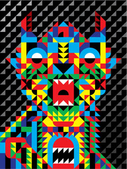
Про Величко, Журко и Родиона Китаева, составляющих дизайн-бюро «Щука» –
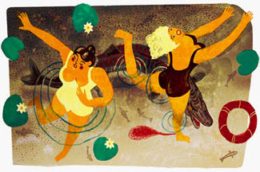
а также про их однокашников Варю Полякову
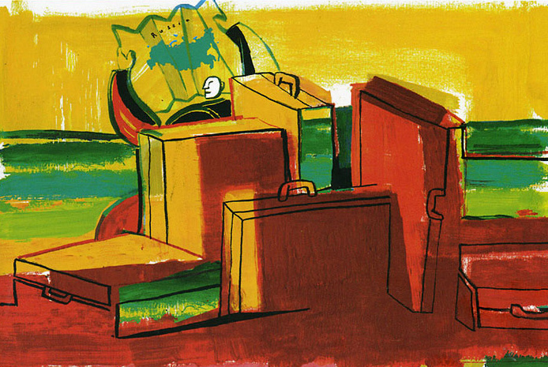
и Уткина
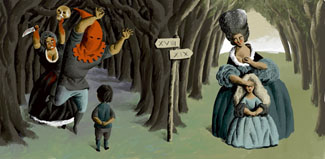
– говорил, про Катыхина говорил два раза
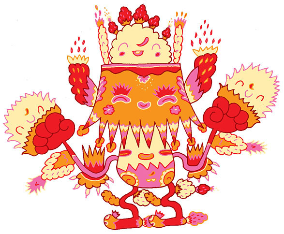
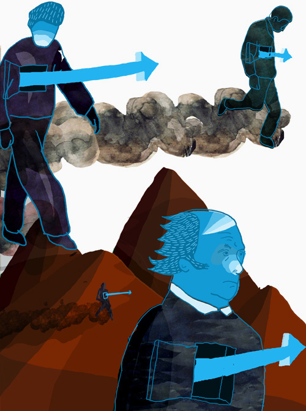
и про Аню Всесвятскую тоже говорил, и все повторю, если надо. Жалко вот, что картинки на сайте не дают представления о том, как работают вот эти ее декоративные мантры. У меня дома Анина картина (под названием «Меламеды») работает ионизатором.
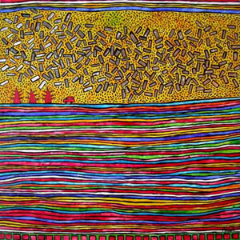
Дальше вперемешку:
Саша Васин, подвижник, лауреат, педагог, остроумнейший художник и вообще большой молодец.
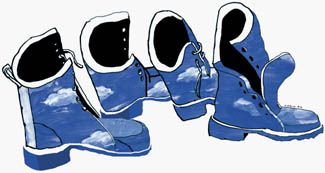
Саша Наумов – лицо лейбла Bad Taste, и чрезвычайно свежее, надо сказать, лицо, не обросшее профессиональным жирком. Надеюсь, он в таком состоянии продержится как можно дольше.
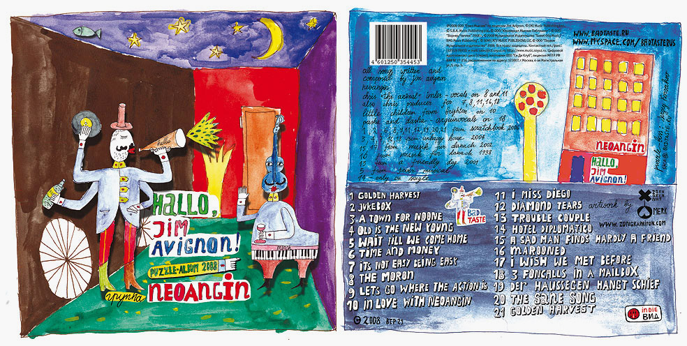
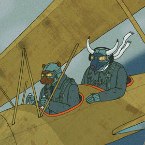
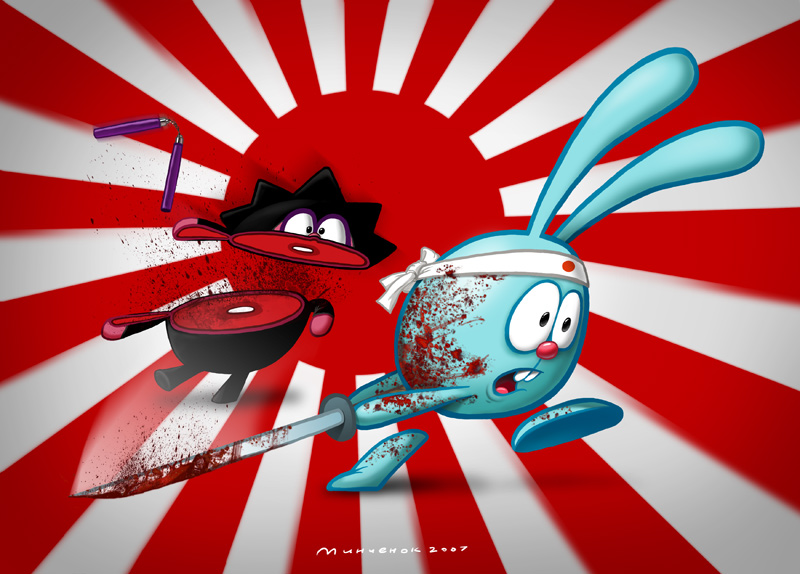
– работают в Питере аниматорами, и чудом каким-то умудряются рисовать иллюстрации время от времени. У кого стоит нарративу в иллюстрации и работе с деталями поучиться.
И еще по поводу нарратива – особенно вот сюда рекомендую сходить
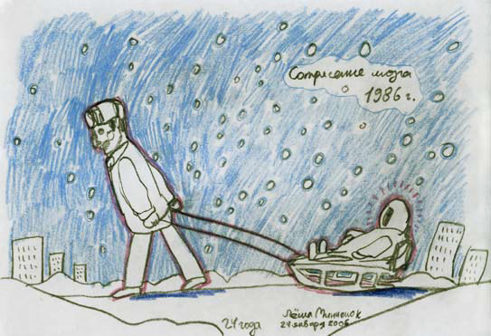
Тут лирическое отступление.
Иллюстрация ведь в первую очередь нарративное искусство, и в известном смысле даже более сложное, чем комикс.
В лучшие моменты она, как японское стихотворение, рассказывает больше, чем нарисовано. Должна бы. Иллюстратор должен быть толковым литератором, уметь, не заимствуя у текста подлежащее-сказуемое, рассказать на полях собственную историю, комментируя то, о чем говорится в тексте (разве в книжной иллюстрации все прямолинейнее). Другое дело, что художников, способных на это - раз, два и обчелся.
Так вот, Стас Орлов. Тут мощная школа рисунка и экзотический по нынешним временам инструмент (программа paintbrush) блекнут рядом с тем, как (и какие) он рассказывает истории.
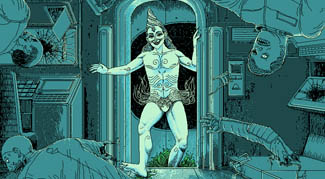
Я много думал о том, почему большинство классных иллюстраторов-рассказчиков предпочитают истории жутковатые, и ответа пока не нашел. Видимо, это все-таки следствие некой эмоциональной раскачанности (может, в историях «добрых» никто как правило особенно не шевелится – рисовать нечего).
Вот Макс Покалев это счастливое исключение. Впрочем, хотя история у него всегда присутствует, но на втором плане, а самое интересное происходит в плоскости тактильных ощущений, и тут Максим король. Если кто не знает, он с 2001го, кажется, года исправно каждую неделю рисует на формат А5 отчет о семи прожитых днях. И самое интересное в этой истории не подвиг труда и не то, что картинки отличнейшие, а то, что человеку под сорок, а он – растет.
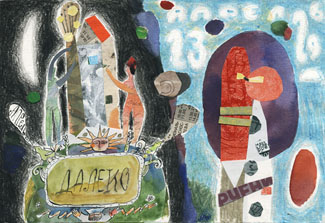
Ладно, смотрим дальше.
Из сильных литераторов у нас еще Женя Тонконогий
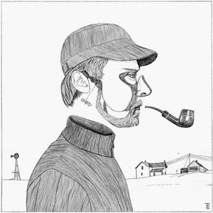
Артем Крепкий, недавний выпускник одного из киевских худвузов, человек с говорящей фамилией – я такого ядреного рисунка не видал давно.
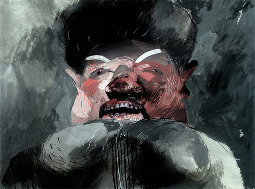
Оксану Гривину тоже незачем представлять, из нас, наверное, самый неленивый художник, каждая ворсинка на ковре любовно причесана и, что важнее, названа по имени – и есть при этом какие-то дико пронзительные вещи. Учитесь.
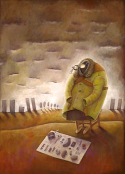
Валя Ткач – иллюстратор, узнаваемый со ста шагов, а с трех при нужде умеющий сбить с ног.
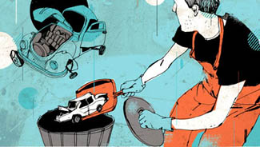
Евгений Парфенов – тяжеловес, по-другому не скажешь. Тоже, кстати, стал заметно мощнее за последний год.
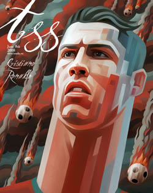
Лена Плескевич всем известна как профессор по части векторных девиц, а я вот на эту вещь медитирую уже не первый год, и по-моему, круче ничего на свете нету.
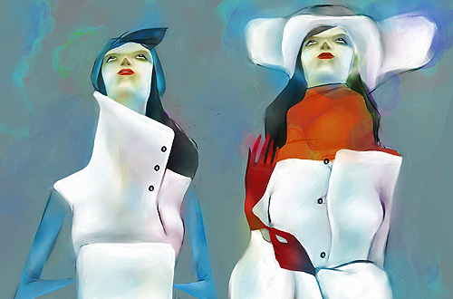
Рома Годунов – человек, чьему вкусу которому я доверяю больше, чем своему и каждую свою важную работу показываю, скривится – не скривится.
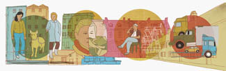
Саша Бобкова, арт-директор журнала KIDS и знатная рукодельница
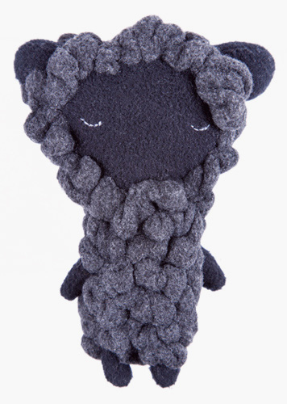
Паша Гришин – просто страшно крутой.
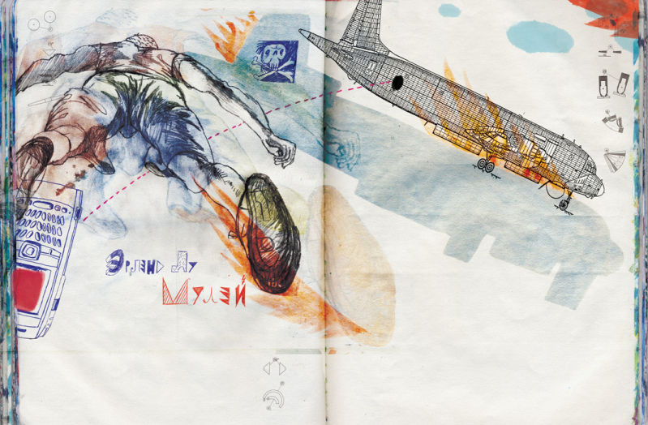
Вика Семыкина – недавнее наше приобретение и начинающий пока иллюстратор, но постепенно всех уберет.
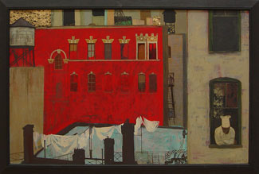
Варя Аляй-Акатьева – тоже автор со своими собственными подходами, чрезвычайно эффектными и узнаваемыми.
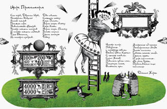
Илья Ёж – житель Ньора, Франция, и пока художник не слишком плодовитый, но за одну вот эту плиту я его позвал к нам не раздумывая.
отметьте, кстати, небанальный и непротивный пейнтер.
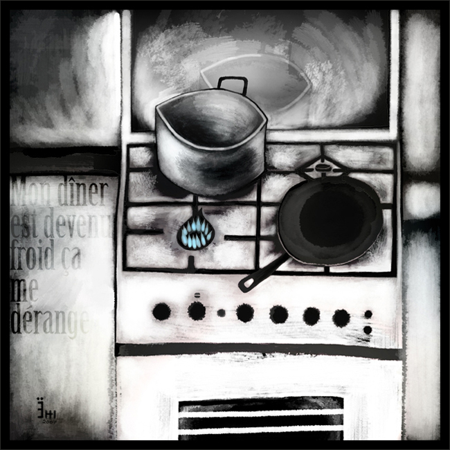
Зоя Черкасская – полноценная звезда современного исусства в самой веселой его ипостаси, и вообще отличная художница. Жалко, конечно, что иллюстрация Зое уже мала.
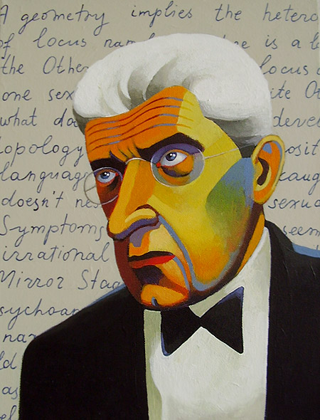
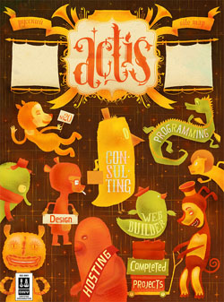
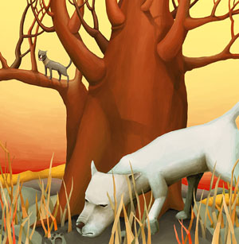
– тут налицо критическая концентрация иллюстраторской крутоты на одну семью, и трагедия, что оба сейчас почти не рисуют – но, во-первых, по совокупности заслуг имеют право, а во-вторых, они нам всем покажут еще.
Влад Васильев – что бы сказать-то? кто не знает Влада, тот дурак.
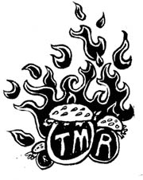
(см. целиком шикарный плакат про глобализм)
Маша Краснова-Шабаева, конечно, тоже всем известна – но я вот, чем дольше на ее работы смотрю, тем меньше понимаю, как это. Местами просто нечеловечески круто.
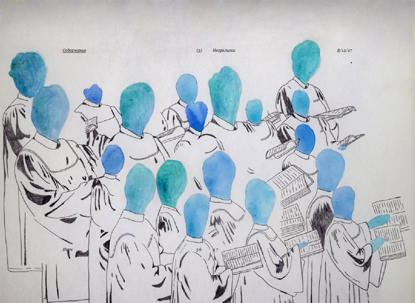
Ляля Ваганова шикарный акварелист и наблюдатель за живой природой. Дайте кто-нибудь Ляле детскую книжку сделать, мне позарез нужна.
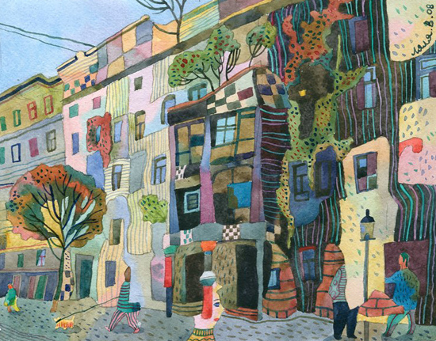
Сергей Первушин, он же exabute, большой специалист по скрытому от глаз. Мне с некоторых пор время от времени снятся сны в его оформлении, а наяву стал попадаться вот этот его особенный черный пантон. Тот случай, когда изжеванная банальность про «собственный мир» оказывается наиболее точной формулировкой.
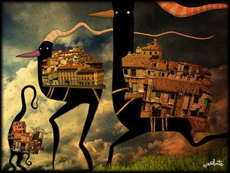
По моим наблюдениям, самый влиятельный иллюстратор последних лет, трендсеттер, можно сказать – видели бы вы, сколько народу взялось покрывать листы А3 мелкими черточками.
Ну, тут трудно устоять, чего уж.
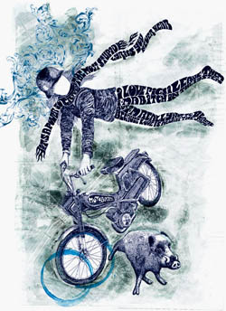
Не слишком раскрученный, но очень бодрый художник из Твери. Следите внимательно.
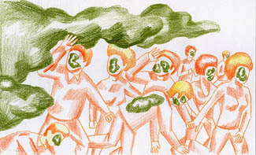
Евгений Рудый – тут не знаю, что сказать, поскольку непонятно, в каком из десяти разных направлений (или: в каких трех из десяти), уже прощупанных, человек двинется дальше – но в любом случае будет интересно.
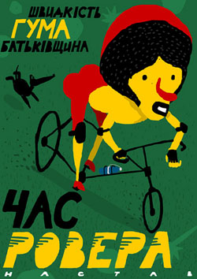
В этом смысле Галя Панченко пример и образец: не нужно, коллеги, искать собственный стиль, нужно пробовать то, се, пятое и десятое. Надо будет, придет сам, не придет – и бог с ним.
Я у Гали помню не меньше десяти совершенно разных историй, в смысле подходов, и то ли еще будет.
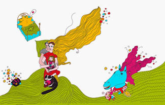
Вот Ира Троицкая, кстати, взялась рисовать комиксы, и прямо видно, что поперло. Хотя у нее вообще портфолио, сколько за ним слежу, все лучшает и лучшает.
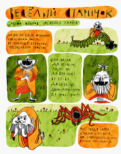
По основной профессии шрифтовик, поэтому главный среди нас специалист по леттерингу. Притом портреты рисует точно попохожее, чем я.
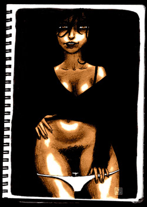
Cергей Снурник, по собственному выражению, «дизайнер-костолом» – лучше не скажешь.
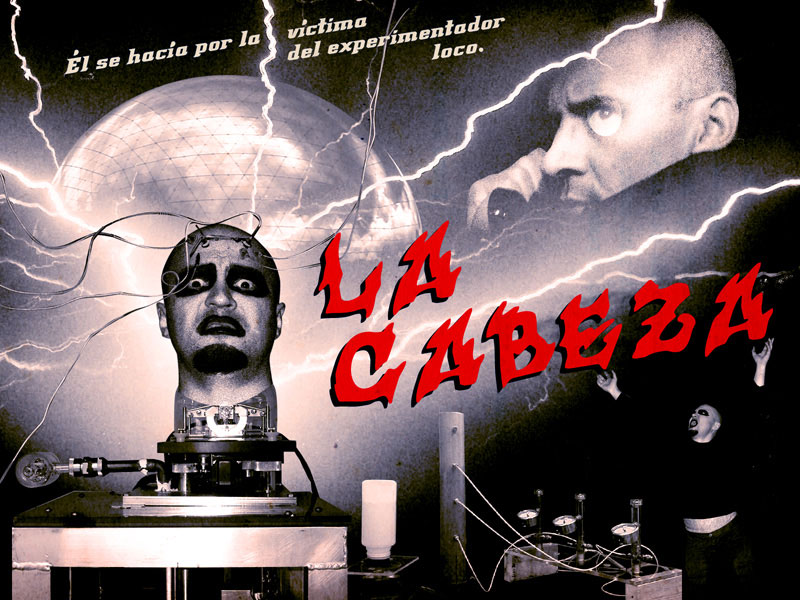
(в роли головы – Катыхин)
Женя Киселев – думаю, все видели, но мало ли. Женя совершенно гипнотические вещи делает, и уж точно ни на кого не похожие.
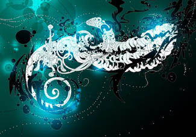
Вроде все – заходите. Сотому подписчику подарок (когда выйдет).